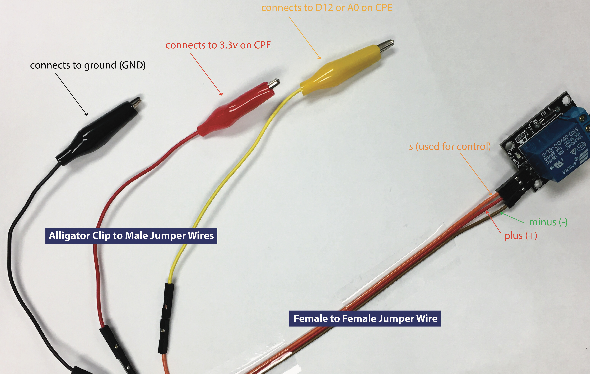
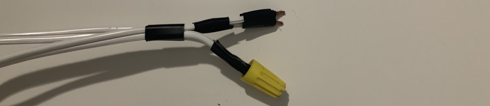
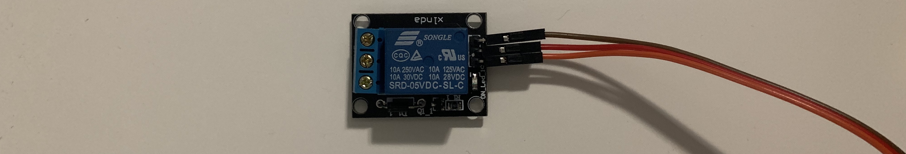
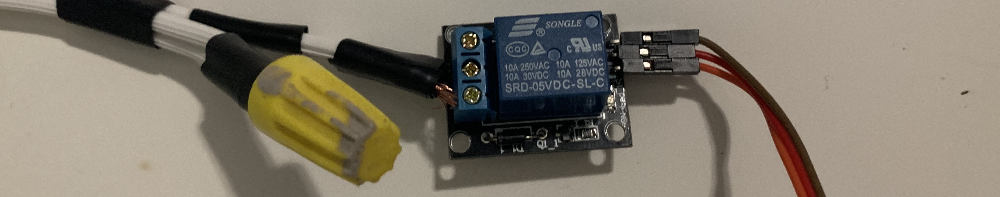
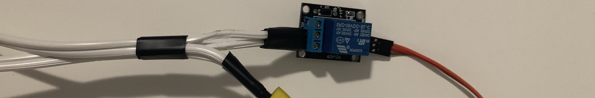

How Does a Relay Work
The way relays work is actually really easy to understand! Relays are electrically operated switches, meaning that when a current is passed through the relay it flips a switch and it allows the current through. We are using a relay to prevent burnout in the Circuit Playground Express board. The electric grid has a voltage of 110 volts and that would be damaging to the board if used as an input the board has a voltage output of 3.3 volts so it wouldn't be enough power out to power much of anything. Using a relay allows you to circumvent all of those issues.
Connecting the Relay to the CPX
This is how we're going to connect the relay to the Circuit Playground Express (CPX):
- Connect the 3 Female to Female Jumper Wires to all 3 pins on the relay. Keep in mind which pin is for what: S (control), + (power), and - (ground).
- Connect the black alligator clip’s male end to the female jumper cable that connects to the - (ground) pin, in our case, it’s the brown one female jumper cable.
- Connect the red alligator clip’s male end to the female jumper cable that connects to the + (power) pin, in our case, it’s the red one female jumper cable.
- Connect the yellow alligator clip’s male end to the female jumper cable that connects to the S (control) pin, in our case, it’s the orange one female jumper cable.
- Now connect the black alligator clip’s alligator side to the GND (ground) IO on the Circuit Playground Express.
- Connect the red alligator clip’s alligator side to the 3.3V (power) IO on the Circuit Playground Express.
- Connect the yellow alligator clip’s alligator side to the A0 (D12 / control) IO on the Circuit Playground Express
If you get lost check out this diagram:
Connecting the Relay to Extension Cord
So now we need to hook up our extension cord to the relay, so we can turn it on and off. Because of the use of high voltage we need to make sure everything possible is disconnected from the wall and to make sure that at the end there is no exposed wire.
- Cut the extension cord in half.
- Cut both already cut extension cord parts down the seam, about 1 inch down, so you have two semi separate wires.
- Cut partway into the each wire about an quarter inch down the cuts so you can rip the shielding off the wire, you should now have 4 wires with a little bit of exposed wire.
-
Now using some electrical tape cover shielding just under the exposed wire wrap it all the way around.

-
Now connect pairs from each of the opposing halves and wrap electrical tape around each of the pairs
from the opposing halves.

-
On one of the halves place the Wire Connector and then twist until it feels tight. Make sure to stop
twisting when it feels tight as to not over twist, over twisting may damage the wires.

We're now ready to put the two exposed wires into the relay.
Putting The Exposed Wire Into The Relay
On the relay side, there are 3 terminals, NO, COM, and NC, on the Parallax Relay we are using COM is unmarked, so you will only see NO and NC. COM is for power input, this is where the power goes into the relay. NO is the power output for when the relay is powered on, this is where we’ll put our power output. NC is the power output for when the relay is not powered on, we won’t be plugging anything into this one. Follow the steps to input the exposed wire into the relay:
-
Using a small screwdriver make sure all of the terminals are opened.
 -
Plug one of the ends into the unmarked COM (middle) power terminal and screw down tight, we recommend
using the outlet end not the plug end of the extension cord, but as this is AC it doesn’t really
matter.
 -
Plug the other end into the NO marked power terminal and screw down tight and make sure all the
terminals are closed.

Now the relay is all up and running, we just need to write the code to control the relay and then control the relay with the remote.